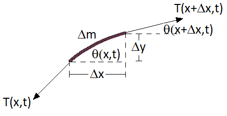

1.3. Longitudinal Waves¶
Lets start with the classic derivation of waves propagating, with a collection of \(N\) masses \(m\) connected together on springs (with spring constant \(k\)), each with equilibrium separation \(h\), as shown in Figure 1. We can measure the horizontal displacement \(u(x,t)\) from the equilibrium positions.
|
|---|
Figure 3 - Identical masses connected by identical springs. |

If the springs follow Hooke’s law, then \(F_{H} = k\,u(x,t) \) and equally all the masses will follow Newton’s second law \(F_{N} = m \,a(x,t)\).
We can analyse the dynamics of the middle mass, where the Hooke’s law forces will from both the spring \(x+h \rightarrow x+2h\) as well as the spring \(x \rightarrow x+h\)
Since these defintions are equal, then by rearrangement:
Lets also consider a chain of springs in series, as shown in Figure 4.
|
|---|
Figure 4 - Two springs in series with a mass |

We can consider the total displacement of the mass \(m\), as well as as the individual springs displacements
If \(x_{tot}\) can be broken up into the individual springs displacements \(x_{tot} = x_1 + x_2\) then we simplify to
by rearrangement this reduces to
Since the springs propagate the force applied through them, all the forces are the same \(F_{tot} = F_1 = F_2\), so we are finally left with
and therefore for two springs, the effective spring constant is
If there are \(N\) springs in series, then this result takes the form
and if the springs are identical, \(k_1 = k_2 = \dots = k_N = k\) this result reduces to
We can substitute this into Equation (1.3):
Now if we want to consider the whole chain of masses and springs, then with \(N\) masses and total mass on the chain is \(m_{tot} = Nm\), which results in
and if the the total chain length is \(L = Nh\), then:
By taking the limit \(N \rightarrow \infty\) and therefore \(h \rightarrow 0\) for a finite chain length \(L\), this has exactly the form of the partial derivative in Equation (1.2). Hence Equation (1.4) has the form:
If we examine the units of the constants here:
This results in the well known form of the wave equation in one dimension:
where \(c\) is the wave speed of some form (more on this later). We can extend this to higher dimensions, packaging the spatial derivatives up into the Laplacian \(\nabla^2\) (sometimes written \(\Delta\))
where in cartesian coordinates
These derivatives are sometimes repackaged up with the d’Alembertian \(\Box\)
and therefore the wave equation here has the form:
We notice that this equation is homogeneous - we could also add a source term on the RHS, although then it would admit both wave like solutions AND inhomogeous solutions.
1.3.1. Transverse Waves*¶
Our derivation so far has been done for a longitudinal waves - where the direction of oscillation of
the wave is parallel to the direction of propagation of the wave. We could however derive the wave equation
for a string, as seen in Figure 5, stretched out by a tension \(\bf{T}\) and solving the equations of motion.
This results in a wave that where the direction of oscillation is perpendicular to the direction of
propagation - this is known as a transverse wave .
 |
|---|
Figure 5 - Section of a string oscillating under tension \(\bf{T}\), |
a wave equation can be derived considering infinitesimal deviations in the \(\bf{x}\) direction.}
Figure 5 depicts oscillations in the \(y\) direction for a smaller cross section \(\Delta m\) of
oscillating (non-stiff) wire, whilst the wave itself is travelling in the \(x\) direction.
We will consider a small section of the wire, with \(\Delta x,\,\Delta y,\, \Delta m \rightarrow 0\)
and therefore \(\theta \ll 1\). To begin we resolve forces in the \(y\) direction, which will be
unbalanced and therefore have an acceleration term appearing:
The cross section of wire \(\Delta m\) can be reduced down to a mass density \(\rho_L\) of the wire (with units kg m\(^{-1}\)) and a length \(\Delta s\)
Looking at Figure 5 we see that
and therefore we can reduce \(\Delta m\) down to:
Rearranging Equation (1.7), we find:
and taking the limit of \(\Delta x \rightarrow 0\), we see this is just a partial derivative:
If we examine the forces in the \(x\) direction, we see these are balanced:
dividing through by \(\Delta x\) and again taking the limit \(\Delta x \rightarrow 0\), we find:
Substituting this result into Equation (1.8) and rearranging gives:
In the limit of \(\Delta x \rightarrow 0\):
and therefore we find:
in the limit of \(\theta \ll 1\), with \(c = \sqrt{T/\rho_L}\). This reduces to the wave equation:
We can check the units of \(c\),